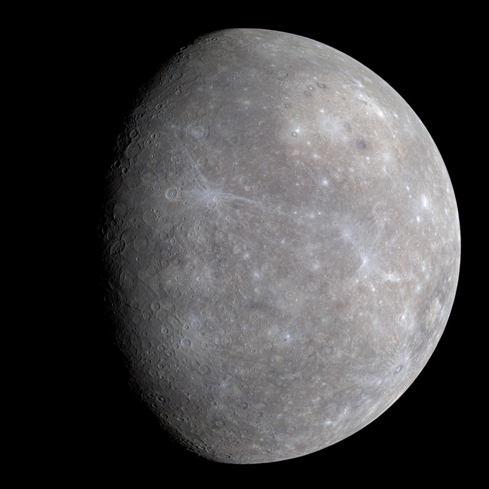
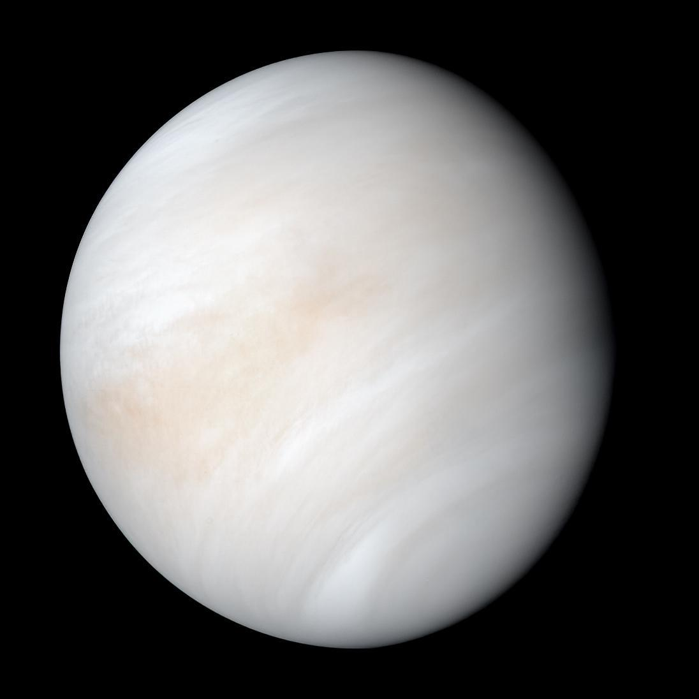

Numbers for Nerds:
Distances:
Sun size: 50.000km per 1 Unit
Planet size: 10.000km per 1 Unit
Planet distance: 1.000.000km per 1 Unit
Time:
Planet rotation: (1/((days for 1 full rotation)*20)) per frame

The Sun is the star at the center of the Solar System. It is a nearly perfect ball of hot
plasma,heated to incandescence by nuclear fusion reactions in its core. The Sun radiates this
energy mainly as light, ultraviolet, and infrared radiation, and is the most important source of energy
for life on Earth.
The Sun's radius is about 695,000 kilometers (432,000 miles), or 109 times that of Earth. Its mass is
about 330,000 times that of Earth, comprising about 99.86% of the total mass of the Solar System.
Roughly three-quarters of the Sun's mass consists of hydrogen (~73%); the rest is mostly helium (~25%),
with much smaller quantities of heavier elements, including oxygen, carbon, neon, and iron.

Mercury is the first planet from the Sun and the only one in the Solar System without a considerable
atmosphere. It is the smallest terrestrial planet of the Solar System and despite being also smaller
than the Solar System objects Ganymede and Titan it is massive enough to have about the same surface
gravity as the even larger planet Mars. Like Venus, Mercury orbits the Sun within Earth's orbit, making
it appear in Earth's sky only in inferior positions, never appearing further from the Sun than 28°,
resulting in it appearing only as a "morning star" or "evening star", like Venus, though not as
brightly. Mercury and Earth return to the same position to each other in synodic cycles of 116 days. It
is named after the Roman god Mercurius (Mercury), god of commerce, messenger of the gods, and mediator
between gods and mortals, corresponding to the Greek god Hermes (Ἑρμῆς).

Venus is the second planet from the Sun and the only terrestrial object in the Solar System other than
Earth that has a substantial atmosphere and is almost as massive and large as Earth. Like Mercury, Venus
orbits the Sun always closer than Earth, resulting in it appearing in Earth's sky always inferior (close
to the Sun) and at night as either a "morning star" or "evening star". Venus appears in Earth's sky also
as the brightest natural object, aside from the Sun and Moon, due to its proximity to Earth and the Sun,
its large size and high albedo. These prominent appearances of Venus in Earth's sky have made
Venus a classical planet, a common and important object for humans, their cultures and astronomy.
.jpg)
Earth is the third planet from the Sun and the only place known in the universe where life has
originated and
found habitability. While Earth may not contain the largest volumes of water in the Solar System, only
Earth
sustains liquid surface water, extending over 70.8% of the Earth with its ocean, making Earth an ocean
world.
Earth's polar regions currently retain most of all other water with large sheets of ice covering ocean
and land,
dwarfing Earth's groundwater, lakes, rivers and atmospheric water. Land, consisting of continents and
islands,
extends over 29.2% of the Earth and is widely covered by vegetation. Below Earth's surface material lies
Earth's
crust consisting of several slowly moving tectonic plates, which interact to produce mountain ranges,
volcanoes,
and earthquakes. Earth's liquid outer core generates a magnetic field that shapes the magnetosphere of
Earth,
largely deflecting destructive solar winds and cosmic radiation.

The Moon is Earth's only natural satellite. It is the fifth largest satellite in the Solar System and
the largest and most massive relative to its parent planet, with a diameter about one-quarter that of
Earth (comparable to the width of Australia). The Moon is a planetary-mass object with a
differentiated rocky body, making it a satellite planet under the geophysical definitions of the term
and larger than all known dwarf planets of the Solar System. It lacks any significant atmosphere,
hydrosphere, or magnetic field. Its surface gravity is about one-sixth of Earth's at 0.1654 g, with
Jupiter's moon Io being the only satellite in the Solar System known to have a higher surface gravity
and density.

Mars is the fourth planet from the Sun and the third largest and massive terrestrial object in the Solar
System. Mars has a thin atmosphere and a crust primarily composed of elements similar to Earth's crust,
as well as a core made of iron and nickel. Mars has surface features such as impact craters, valleys,
dunes, and polar ice caps. Mars has two small, irregularly shaped moons, Phobos and Deimos.
Some of the most notable surface features on Mars include Olympus Mons, the largest volcano and
highest-known mountain in the Solar System, and Valles Marineris, one of the largest canyons in the
Solar System. The Borealis basin in the Northern Hemisphere covers approximately 40% of the planet and
may be a large impact feature. Days and seasons on Mars are comparable to those of Earth, as the
planets have a similar rotation period and tilt of the rotational axis relative to the ecliptic plane.
Liquid water on the surface of Mars cannot exist due to low atmospheric pressure, which is less than 1%
of the atmospheric pressure on Earth. Both of Mars's polar ice caps appear to be made largely of
water. In the distant past, Mars was likely wetter, and thus possibly more suited for life. It
is not known whether life has ever existed on Mars.

Jupiter is the fifth planet from the Sun and the largest in the Solar System. It is a gas giant with a
mass more than two and a half times that of all the other planets in the Solar System combined, and
slightly less than one one-thousandth the mass of the Sun. Jupiter is the third brightest natural object
in the Earth's night sky after the Moon and Venus, and it has been observed since prehistoric times. It
was named after Jupiter, the chief deity of ancient Roman religion.
Jupiter is primarily composed of hydrogen (90% by volume), followed by helium, which constitutes a
quarter of its mass and a tenth of its volume. The ongoing contraction of Jupiter's interior generates
more heat than the planet receives from the Sun. Because of its rapid rotation rate of 1 rotation per 10
hours, the planet's shape is an oblate spheroid: it has a slight but noticeable bulge around the
equator. The outer atmosphere is divided into a series of latitudinal bands, with turbulence and storms
along their interacting boundaries. A prominent result of this is the Great Red Spot, a giant storm
which has been observed since at least 1831.
.jpg)
Saturn is the sixth planet from the Sun and the second-largest in the Solar System, after Jupiter. It is
a gas giant with an average radius of about nine and a half times that of Earth. It has only
one-eighth the average density of Earth, but is over 95 times more massive.
Saturn's interior is most likely composed of a rocky core, surrounded by a deep layer of metallic
hydrogen, an intermediate layer of liquid hydrogen and liquid helium, and finally, a gaseous outer
layer. Saturn has a pale yellow hue due to ammonia crystals in its upper atmosphere. An electrical
current within the metallic hydrogen layer is thought to give rise to Saturn's planetary magnetic field,
which is weaker than Earth's, but which has a magnetic moment 580 times that of Earth due to Saturn's
larger size. Saturn's magnetic field strength is around one-twentieth of Jupiter's. The outer
atmosphere is generally bland and lacking in contrast, although long-lived features can appear. Wind
speeds on Saturn can reach 1,800 kilometres per hour (1,100 miles per hour).

Uranus is the seventh planet from the Sun. It is named after Greek sky deity Uranus (Caelus), who in
Greek mythology is the father of Cronus (Saturn), a grandfather of Zeus (Jupiter) and great-grandfather
of Ares (Mars). Uranus has the third-largest planetary radius and fourth-largest planetary mass in the
Solar System. The planet is similar in composition to Neptune, and both have bulk chemical compositions
which differ from those of the other two giant planets, Jupiter and Saturn (the gas giants). For this
reason, scientists often distinguish Uranus and Neptune as "ice giants".
_flatten_crop.jpg)
Neptune is the eighth planet from the Sun and the farthest known planet in the Solar System. It is the
fourth-largest planet in the Solar System by diameter, the third-most-massive planet, and the densest
giant planet. It is 17 times the mass of Earth, and slightly more massive than its near-twin Uranus.
Neptune is denser and physically smaller than Uranus because its greater mass causes more gravitational
compression of its atmosphere. Being composed primarily of gases and liquids, it has no well-defined
solid surface. The planet orbits the Sun once every 164.8 years at an average distance of 30.1
astronomical units (4.5 billion kilometres; 2.8 billion miles). It is named after the Roman god of the
sea and has the astronomical symbol ♆, representing Neptune's trident.
a